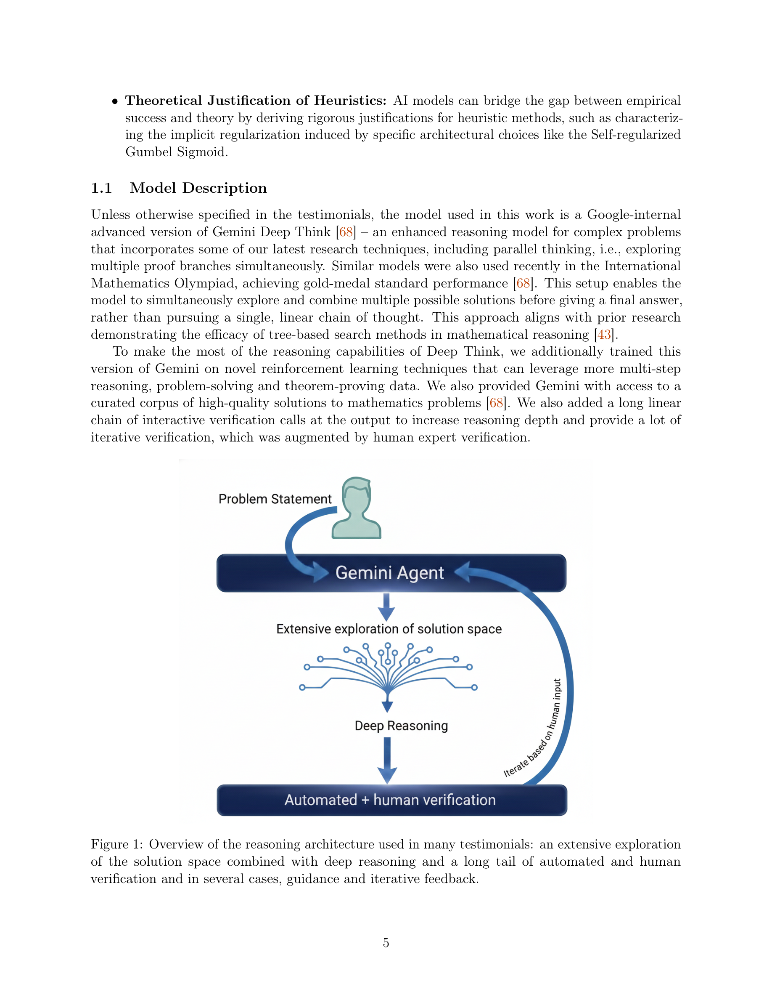

Figure 1
Google Gemini 모델(특히 Gemini Deep Think)을 활용하여 이론 컴퓨터과학, 경제학, 최적화, 물리학 등 다양한 분야에서 미해결 문제 풀이, 추측 반증, 새로운 증명을 실현한 사례 연구 모음과, 이로부터 추출한 효과적인 인간-AI 협업 기법들을 정리한 연구.
이 논문은 LLM이 과학적 발견에 실질적으로 기여할 수 있음을 미해결 문제 풀이라는 가장 설득력 있는 방식으로 보여준다. 반복적 개선, 문제 분해, 학제간 전이라는 공통 기법의 추출은 다른 연구자에게 실용적 가이드를 제공한다. 적대적 리뷰어와 뉴로-심볼릭 루프 같은 고급 활용 패턴은 LLM 활용의 새로운 가능성을 열어준다. 다만 Google/Gemini 중심의 구성과 성공 사례 편향은 결과의 일반화를 제약하며, 재현성 문제도 본질적 한계이다. 전반적으로 "AI as creative partner" 비전을 구체적 증거로 뒷받침하는 시의적절한 연구이며, 향후 다양한 모델과 분야로의 확장 및 실패 사례 분석이 보완되어야 할 것이다.
총평: Gemini를 활용한 과학 연구 사례 연구 모음이나 생존 편향과 체계적 평가 부재로 인해 학술적 신뢰성이 제한적이다.